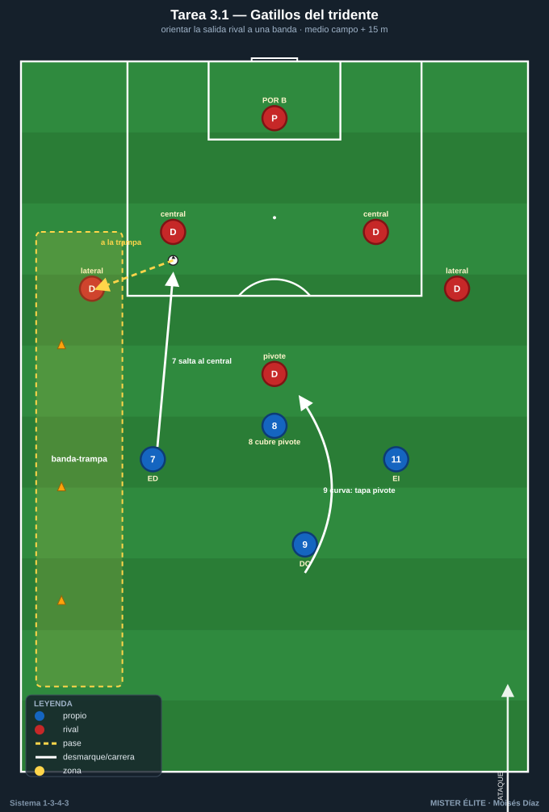
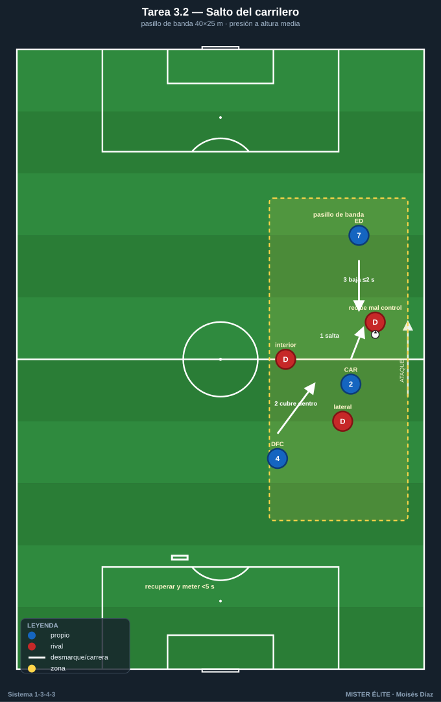
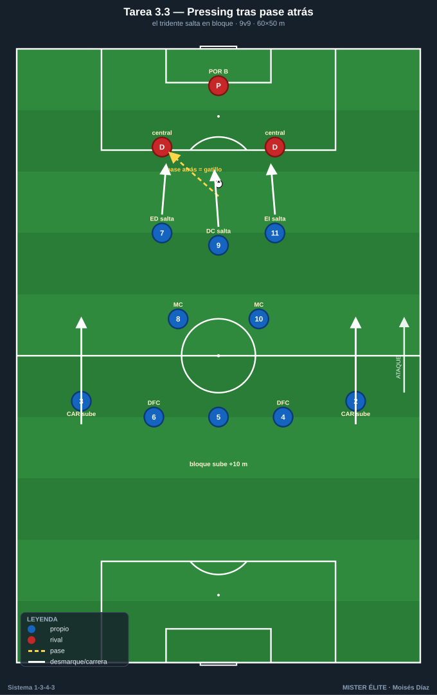
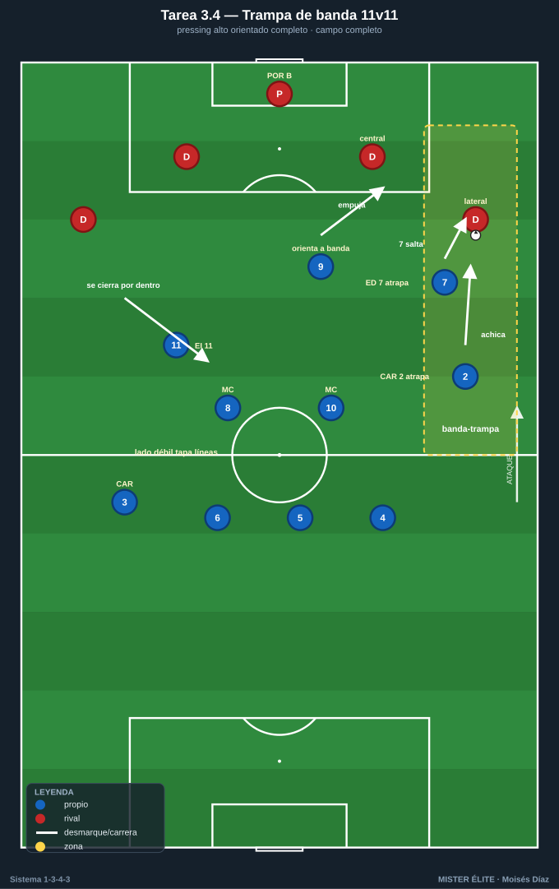

Bloque 3 · Pressing del tridente + gatillos
Presión orientada del tridente, salto del extremo/carrilero y banda-trampa. Categorías: F = Fundamentación · A = Aplicación · S = Específica/competitiva. Leyenda: ◯ atacante · ✕ defensor · → pase · ⇢ conducción · ⟿ desmarque · ▭ portería · ⬡ mini-portería · ⬛ zona/cono.
Tarea 3.1 — Gatillos del tridente: orientar la salida rival a una banda
- Objetivo: Que el tridente ED 7 · DC 9 · EI 11 presione orientando: el 9 tapa al pivote, el extremo del lado salta al central y empuja el balón a una banda-trampa.
- Organización: Medio campo + 15 m. B saca jugando con 4 atrás + pivote (modelo de salida rival más común, p. ej. 4-3-3 / 4-2-3-1). A presiona arriba con tridente 7-9-11 + MC 8 cubriendo el pivote rival. Bandas-trampa marcadas con conos ⬛.

- Desarrollo: B inicia desde su portero. A activa el gatillo: el 9 curva su carrera tapando al pivote rival; el extremo del lado salta al central; el equipo orienta el balón a la banda-trampa para recuperar.
- Provocaciones:
- A solo puede presionar cuando el balón va de central a carrilero/lateral rival (gatillo medible).
- Recuperar en la banda-trampa = 2 puntos; en otro sitio = 1.
- El 9 no puede presionar de frente al central (siempre curvando para tapar línea interior).
- Variantes: F B juega lento, gatillo cantado → A gatillo reconocido por A solo → S B intenta salir por el lado contrario (A reorienta el pressing).
- Coaching: Curvar la carrera del 9 (cuerpo tapa interior); el extremo salta a tiempo, no antes; "una banda es trampa, la otra no existe"; intensidad colectiva al gatillo.
- Duración/Categoría: 4×4 min. A.
Tarea 3.2 — Salto del carrilero: presión a la altura media
- Objetivo: Coordinar el salto del CAR 2/3 sobre el extremo/lateral rival cuando el balón llega a banda, con cobertura del central y del extremo propio que baja.
- Organización: Pasillo de banda 40×25 m (la franja lateral). A: CAR del lado + DFC lateral + ED/EI del lado. B: lateral + extremo + interior rivales que reciben en banda. Mini-portería ⬡ para A al recuperar; portería ▭ para B.

- Desarrollo: B circula hacia la banda. Cuando el balón llega al lateral rival, el CAR de A salta a presionar; el DFC cubre por dentro y el extremo propio baja para no dejar superioridad.
- Provocaciones:
- El CAR salta solo si el receptor rival está de espaldas o con mal control (si recibe de cara, no salta y aguanta).
- Si el CAR salta, el extremo propio debe estar a la altura de la línea de 5 en ≤2 s.
- Recuperar y meter en mini-portería en <5 s = punto.
- Variantes: F B con receptor siempre de espaldas → A receptor mixto (decisión real) → S B con apoyo de tercer hombre para castigar el salto en falso.
- Coaching: Leer el cuerpo del receptor antes de saltar; no saltar a ciegas; el extremo baja sí o sí; cobertura del central inmediata; agresividad si el control es malo.
- Duración/Categoría: 4×4 min. A.
Tarea 3.3 — Pressing tras pase atrás: el tridente salta en bloque
- Objetivo: Aprovechar el pase atrás rival como gatillo colectivo: tridente salta, carrileros suben y la línea acompaña para presión alta sostenida.
- Organización: 60×50 m, 2 porterías ▭ + porteros. 9v9. A en estructura 1-3-4-3 alta; B obligado a construir desde atrás.

- Desarrollo: Juego corriente, pero cada pase atrás de B hacia su portero/central dispara el pressing de A: el tridente salta, los carrileros suben a la línea media, el bloque se desplaza arriba 10 m.
- Provocaciones:
- Cada pase atrás de B = gatillo obligatorio; si A no salta en 2 s, B suma punto.
- Si A recupera arriba (campo de B) tras el gatillo = 3 puntos.
- B no puede jugar en largo directo desde portero.
- Variantes: F gatillo cantado por el técnico → A reconocido por A → S B con permiso de juego largo (A arriesga el salto sabiendo el riesgo a la espalda).
- Coaching: Reconocer el pase atrás como señal; saltar todos juntos o ninguno; carrileros valientes que suben; portero-líbero alto como último seguro.
- Duración/Categoría: 4×5 min. S.
Tarea 3.4 — Trampa de banda 11v11: pressing alto orientado completo
- Objetivo: Integrar todos los gatillos del bloque en contexto real: tridente + carrileros + mediocentros presionan orientando a banda-trampa y recuperan alto.
- Organización: Campo completo, 11v11 (o 10v10). A en 1-3-4-3; B en sistema de 4 atrás que construye. Banda derecha pintada como trampa ⬛.

- Desarrollo: A presiona alto orientando siempre hacia la banda-trampa; el extremo de ese lado y el carrilero atrapan; el lado contrario se vacía (extremo contrario por dentro tapando líneas).
- Provocaciones:
- Recuperar en la banda-trampa y finalizar en <8 s = gol doble.
- Si B sale limpio por el lado contrario a la trampa, suma punto.
- Pressing solo válido sobre gatillos definidos (pase a banda, pase atrás, mal control); presión sin gatillo = falta a favor de B.
- Variantes: F sin límite de finalización → A límite 8 s → S B con dos comodines de banda para estresar la orientación.
- Coaching: Colectividad del salto; el lado débil tapa por dentro; reconocer y compartir el gatillo con la voz; rematar la recuperación rápido (enlaza con Bloque 6).
- Duración/Categoría: 3×8 min. S.